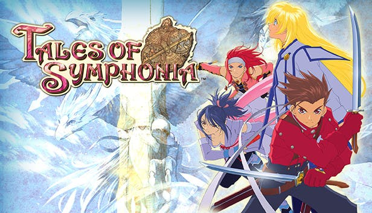
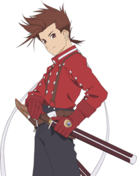
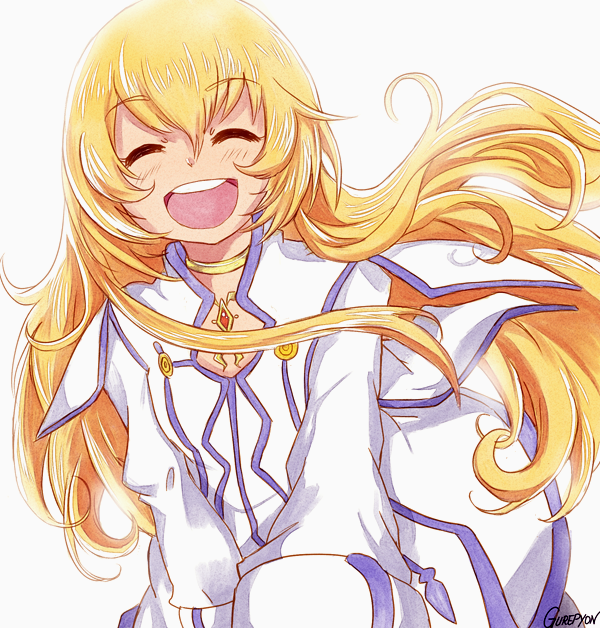

 
A very serious convict sent by the Pope of Tethe'alla to capture Colette Brunel, the party first meets him at the Meltokio Sewers after defeating minor convicts. He gets a hold on Zelos Wilder and says that if they made a move, he would kill him. Presea Combatir comes forth and manages to save Zelos, and when Regal sees Presea, he becomes stunned. Genis Sage uses the chance to attack the man with Fire Ball. Regal then retreats together with the other people. The next time Regal shows up is in the Gaoracchia Forest. He assures the party that he is not going to take Colette for the moment; he just wants to talk to Presea. Genis is angry at the statement, but lets Regal do it. When Regal sees Presea's Exsphere, he gets angry and attempts to take it off, but Presea hits him away. The party takes this as a warning and fights him. Upon his defeat, Regal passes out, but is far from dead. He is carried by Colette to Mizuho. When waking up, he helps the party when Zelos says that since he wants to talk to Presea, he would have to stick with them without doing anything funny; Regal agrees.
A very serious convict sent by the Pope of Tethe'alla to capture Colette Brunel, the party first meets him at the Meltokio Sewers after defeating minor convicts. He gets a hold on Zelos Wilder and says that if they made a move, he would kill him. Presea Combatir comes forth and manages to save Zelos, and when Regal sees Presea, he becomes stunned. Genis Sage uses the chance to attack the man with Fire Ball. Regal then retreats together with the other people. The next time Regal shows up is in the Gaoracchia Forest. He assures the party that he is not going to take Colette for the moment; he just wants to talk to Presea. Genis is angry at the statement, but lets Regal do it. When Regal sees Presea's Exsphere, he gets angry and attempts to take it off, but Presea hits him away. The party takes this as a warning and fights him. Upon his defeat, Regal passes out, but is far from dead. He is carried by Colette to Mizuho. When waking up, he helps the party when Zelos says that since he wants to talk to Presea, he would have to stick with them without doing anything funny; Regal agrees.
An iFrame is a little window that you can place on a webpage. iFrame is actually short for inline frame.